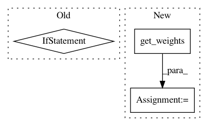

1d52eb75c5fcfb3f9465eb6614b7bb2b57dece4d,autokeras/layer_transformer.py,,deeper_conv_block,#Any#Any#Any#,10
Before Change
new_conv_layer = StubConv(n_filters, kernel_size=filter_shape, func=conv_layer.func)
bn = StubBatchNormalization()
if weighted:
new_conv_layer.set_weights((add_noise(weight, np.array([0, 1])), add_noise(bias, np.array([0, 1]))))
new_weights = [np.ones(n_filters, dtype=np.float32),
np.zeros(n_filters, dtype=np.float32),
np.zeros(n_filters, dtype=np.float32),
np.ones(n_filters, dtype=np.float32)]
bn.set_weights(new_weights)
return [bn,
StubActivation("relu"),
new_conv_layer,
StubDropout(constant.CONV_DROPOUT_RATE)]
After Change
if not weighted:
return StubConvBlock(conv_layer.filters, conv_layer.kernel_size)
filter_shape = (kernel_size,) * (len(conv_layer.get_weights()[1][0].shape) - 2)
n_filters = conv_layer.filters
weight = np.zeros(filter_shape + (n_filters, n_filters))
center = tuple(map(lambda x: int((x - 1) / 2), filter_shape))
for i in range(n_filters):
filter_weight = np.zeros(filter_shape + (n_filters,))
index = center + (i,)
filter_weight[index] = 1
weight[..., i] = filter_weight
bias = np.zeros(n_filters)
conv_weights = (add_noise(weight, np.array([0, 1])), add_noise(bias, np.array([0, 1])))
// conv_weights = (weight, bias)
new_conv_layer = StubConvBlock(n_filters, kernel_size=filter_shape)
bn_weights = [np.ones(n_filters, dtype=np.float32),
In pattern: SUPERPATTERN
Frequency: 3
Non-data size: 3
Instances
Project Name: keras-team/autokeras
Commit Name: 1d52eb75c5fcfb3f9465eb6614b7bb2b57dece4d
Time: 2018-05-20
Author: jin@tamu.edu
File Name: autokeras/layer_transformer.py
Class Name:
Method Name: deeper_conv_block
Project Name: keras-team/keras
Commit Name: ee179f7da155c3cb8129b954db828906886ad4e4
Time: 2015-06-08
Author: francois.chollet@gmail.com
File Name: keras/layers/core.py
Class Name: AutoEncoder
Method Name: get_output
Project Name: keras-team/keras
Commit Name: 7d818d66a243aaf5d4e0f58e257087b0957a1086
Time: 2021-01-13
Author: scottzhu@google.com
File Name: keras/callbacks.py
Class Name: EarlyStopping
Method Name: on_epoch_end